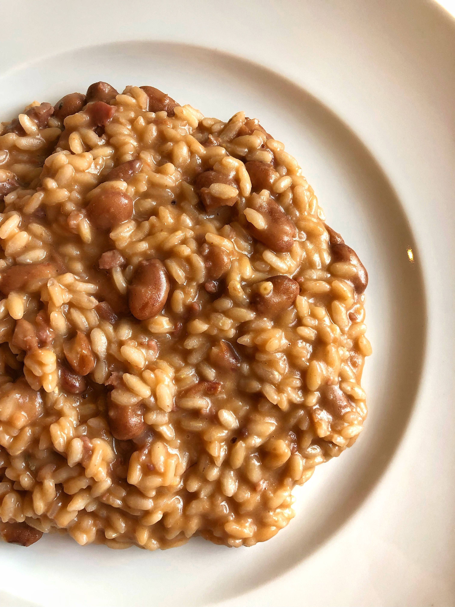
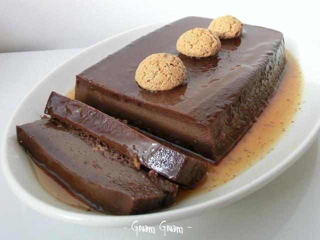

La Cuisine Piémontaise : Un Héritage de Saveurs
Découvrez les plats emblématiques du Piémont, une région réputée pour ses produits d’exception et son amour du goût.

Bagna Cauda
Une sauce chaude à base d’ail, d’anchois et d’huile d’olive, servie avec des légumes.

Agnolotti del Plin
Petites ravioles farcies à la viande, servies avec du beurre et de la sauge.

Brasato al Barolo
Bœuf mijoté lentement dans du vin Barolo avec des herbes et épices.

Panissa
Risotto typique du nord du Piémont avec du riz, haricots, lard et saucisse.

Tajarin al Tartufo
Fines pâtes aux œufs servies avec une sauce au beurre et truffe blanche d'Alba.

Bonet
Dessert à base de cacao, amaretti, œufs et rhum, souvent comparé à un flan.
Les Vins Piémontais à Découvrir
Le Piémont est célèbre pour ses vins d’exception, parfaits pour accompagner ses spécialités culinaires.
- Barolo : Un vin rouge puissant et élégant.
- Barbaresco : Un vin raffiné, souvent comparé au Barolo.
- Moscato d’Asti : Un vin blanc pétillant doux, idéal pour le dessert.